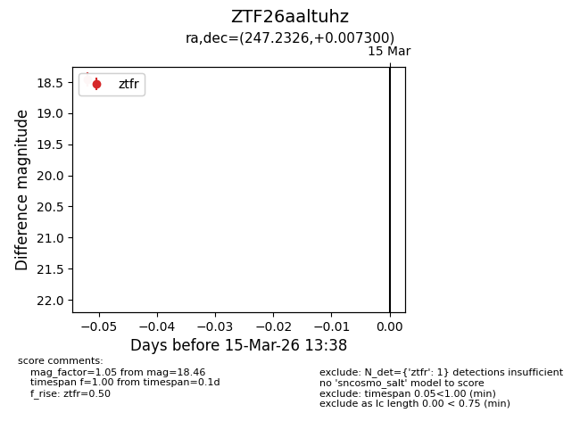
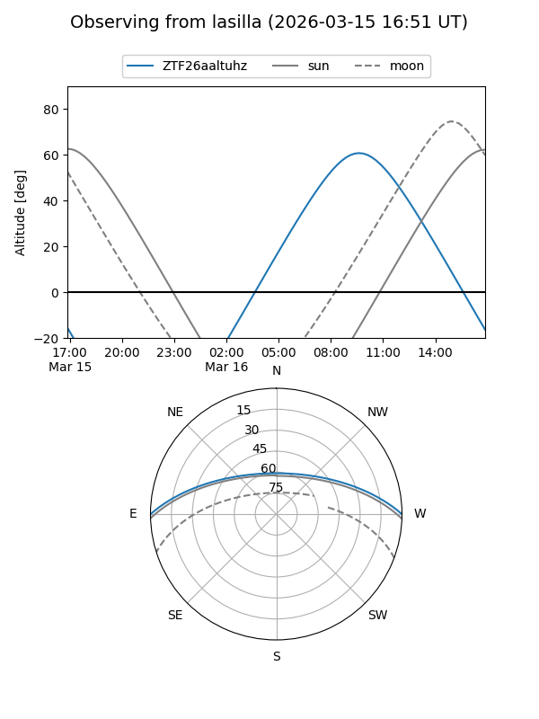
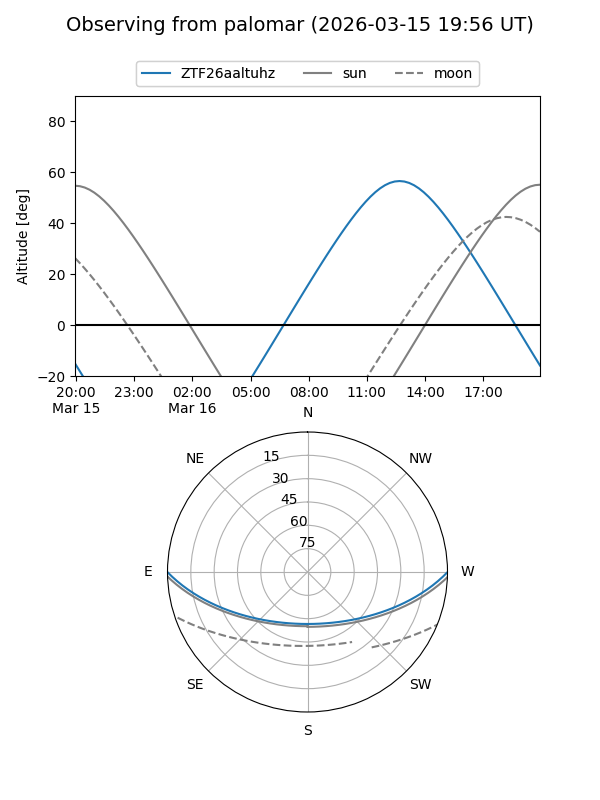

ZTF26aaltuhz
Target ZTF26aaltuhz at 2026-03-15 13:40
Aliases and brokers:
FINK: link
Lasair: link
ALeRCE: link
alt names
ZTF26aaltuhz (ztf,fink_ztf)
Coordinates:
equatorial (ra, dec) = 247.2326,+0.00730
equatorial (HMS+DMS) = 16:28:55.83,+00:00:26.28
galactic (l, b) = (14.8430,+31.23034)
Flags:
Photometry:
last ztfr=18.46
1 ztfr detections
Lightcurve

Visibility


Additional plots